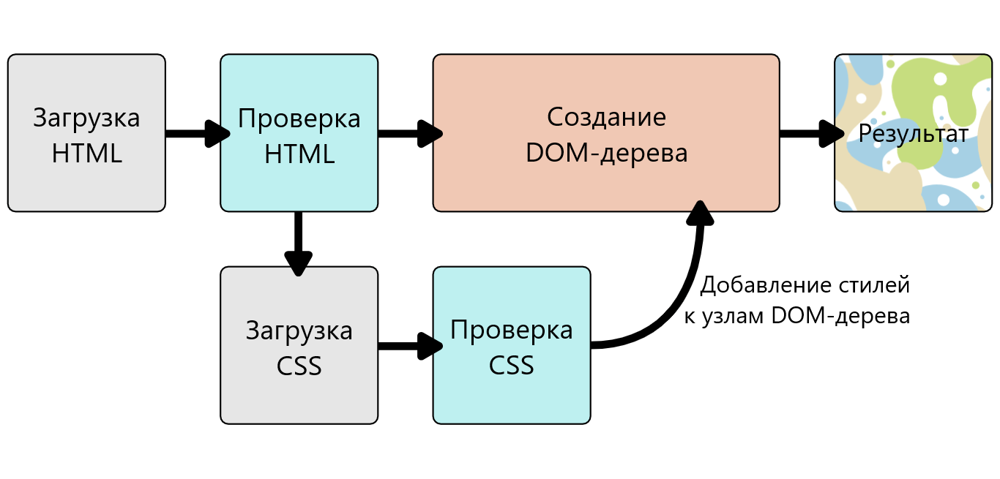

CSS (каскадные таблицы стилей) используется для стилизации и компоновки веб-страниц - например, для изменения шрифта, цвета, размера и интервала содержимого, разделения его на несколько столбцов или добавления анимации и других декоративных элементов.
Этот модуль обеспечивает хорошее начало вашего пути к освоению CSS с основами того, как он работает, как выглядит синтаксис и как вы можете начать использовать его для добавления стилей в HTML.
Зачем нужен CSS
Введение в CSS
Самое первое, что нам нужно сделать, — это сообщить HTML-документу, что у нас есть некоторые правила CSS, которые мы хотим использовать. Существует три различных способа применения CSS к документу HTML, с которым вы обычно сталкиваетесь, однако сейчас мы рассмотрим наиболее обычный и полезный способ сделать это — связать CSS с заголовком вашего документа.
Создайте файл в той же папке, что и документ HTML, и сохраните его как styles.css. Расширение .css показывает, что это файл CSS. Чтобы связать styles.css с index.html, добавьте следующую строку где-то внутри <head> HTML документа:
<link rel="stylesheet" href="styles.css">
Элемент <link> сообщает браузеру, что у нас есть таблица стилей, используя атрибут rel, и местоположение этой таблицы стилей в качестве значения атрибута href. вы можете проверить, работает ли CSS, добавив правило в styles.css.Используя ваш редактор кода, добавьте следующее в ваш файл CSS:
h1 {
color: red;
}
Сохраните файлы HTML и CSS и перезагрузите страницу в веб-браузере. Заголовок первого уровня в верхней части документа теперь должен быть красным. Если это произойдёт, поздравляю — вы успешно применили CSS к документу HTML. Если этого не произойдёт, внимательно проверьте, правильно ли вы ввели всё.
Делая наш заголовок красным, мы уже продемонстрировали, что можем нацеливать и стилизовать элемент HTML. Мы делаем это путём нацеливания на элемент selector — это селектор, который напрямую соответствует имени элемента HTML. Чтобы нацелиться на все абзацы в документе, вы должны использовать селектор p. Чтобы сделать все абзацы зелёными, вы должны использовать:
p {
color: green;
}
Изменение поведения элементов по умолчанию
Когда мы смотрим на хорошо размеченный HTML-документ, даже такой простой, как наш пример, мы можем увидеть, как браузер делает HTML читаемым, добавив некоторые стили по умолчанию. Заголовки большие и жирные, в нашем списке есть маркеры. Это происходит потому, что в браузерах есть внутренние таблицы стилей, содержащие стили по умолчанию, которые по умолчанию применяются ко всем страницам; без них весь текст работал бы вместе, и мы должны были бы стилизовать всё с нуля. Все современные браузеры по умолчанию отображают HTML-контент практически одинаково.
Однако вам часто захочется что-то другое, кроме выбора, сделанного браузером. Это можно сделать, просто выбрав элемент HTML, который вы хотите изменить, и используя правило CSS, чтобы изменить его внешний вид. Хорошим примером является наш <ul> — неупорядоченный список. Он добавляет маркеры, и если я решу, что я не хочу эти маркеры, я могу удалить их.
Добавление класса
Пока у нас есть стилизованные элементы, основанные на их именах HTML-элементов. Это работает до тех пор, пока вы хотите, чтобы все элементы этого типа в вашем документе выглядели одинаково. В большинстве случаев это не так, и вам нужно будет найти способ выбрать подмножество элементов, не меняя остальные. Самый распространённый способ сделать это — добавить класс к вашему HTML-элементу и нацелиться на этот класс.
Как вы можете себе представить, некоторые классы могут быть применены ко многим элементам, и вам не нужно постоянно редактировать свой CSS каждый раз, когда что-то новое должно принять этот стиль. Поэтому иногда лучше обойти элемент и просто обратиться к классу, если только вы не знаете, что хотите создать некоторые специальные правила для одного элемента и, возможно, хотите убедиться, что они не применяются к другим элементам.
Как работает CSS?
Когда браузер отображает документ, он должен совместить его содержимое с его стилями. Этот процесс идёт в несколько этапов, о которых мы сейчас поговорим. Держите в уме, что это очень упрощённая версия того как браузер действительно загружает веб-страницу, а также то, что разные браузеры делают это по разному. Но, происходит, грубо говоря, следующее:
1. Браузер получает HTML-страницу (например, из Интернета)
2. Преобразует HTML в DOM (Document Object Model). DOM (или DOM-дерево) - это представление страницы в памяти компьютера. Подробнее на DOM мы остановимся чуть позже.
3. Затем браузер забирает все ресурсы и описания, связанные с HTML-документом, например: встроенные картинки, видео ... и стили CSS! JavaScript присоединяется чуть позже и мы пока не будем говорить об этом, чтобы все не усложнять.
4. После этого браузер анализирует полученный CSS код, сортирует описанные там правила в зависимости от их селекторов и раскладывает их в различные «корзины»: элементы, классы, идентификаторы(ID) и т.п. Основываясь на найденных селекторах браузер понимает какие правила относятся к определённым «узлам» в DOM-дереве и применяет их по мере необходимости (этот промежуточный шаг называют «формированием дерева представления» или «формированием дерева рендеринга»)
5. Дерево представления (render tree) формируется в том порядке, в каком оно затем должно будет отображаться, когда все правила будут применены.
6. Затем происходит визуальное отображение контента на странице (этот этап называется «отрисовкой»).
Диаграмма демонстрирует этот процесс.

DOM-дерево
DOM напоминает дерево. Каждый элемент, атрибут, отрывок текста становится DOM node (en-US) в разметке. DOM-узлы определяются их отношением с другими узлами. Некоторые родительские элементы имеют дочерние, а у дочерних элементов есть братские.
Понимание DOM позволит вам разрабатывать, отлаживать и поддерживать ваш CSS, потому что именно в DOM-дереве ваши таблицы стилей и код встречаются. Когда вы начнёте работать с браузерным DevTools(инструменты для разработки) вы будете перемещаться по DOM при выборе элементов чтобы увидеть какие правила применяются.
Начало работы с CSS
Интерлюдия
Этот модуль — продолжение раздела Введение в CSS: вы уже знакомы с синтаксисом языка и опробовали основные функции; пришло время углубиться в CSS. В этом модуле рассматриваются каскады и наследование, все доступные типы селекторов, блоков, изменений размеров, фонов, границ, а также отладка и многое другое.
Устройство CSS в одном флаконе
Устройство CSS
В CSS-селекторы используются для стилизации HTML элементов на веб-странице. Существует широкий выбор CSS-селекторов, позволяющий максимально точно отбирать элементы для стилизации. В этой статье и её подстатьях мы в мельчайших подробностях рассмотрим разные их типы и увидим, как они работают.
Устройство CSS
Вы уже встречались с селекторами. Это выражения, которые говорят браузеру, к какому элементу HTML нужно применить те или иные свойства CSS, определённые внутри блока объявления стиля.
В CSS селекторы определяются в спецификации CSS-селекторов; как и другие части CSS, нужно поддерживать их работу в браузерах. Большинство селекторов, которые вы встретите, определены в Спецификации селекторов 3 уровня, где вы сможете найти всю информацию о поддержке селекторов в браузерах.
Типы селекторов
- Селекторы тегов, классов и идентификаторов
К этой группе относятся селекторы HTML-элементов, таких как <h1>.
h1 { }
К группе относятся и селекторы классов:
.box { }
или селекторы идентификаторов (ID):
#unique { }
- Селекторы атрибутов
Эта группа селекторов позволяет выбирать селекторы, основываясь на наличии у них конкретного атрибута элемента:
a[title] { }
или основываясь на значении атрибута:
a[href="https://example.com"] { }
- Псевдоклассы, псевдоэлементы
К этой группе относятся псевдоклассы, которые стилизуют определённое состояние элемента. Псевдокласс :hover, например, применяет правило, только если на элемент наведён курсор мыши
a:hover { }
К группе ещё относятся псевдоэлементы, которые выбирают определённую часть элемента (вместо целого элемента). Например, ::first-line всегда выбирает первую строку внутри элемента (абзаца
в нашем случае), действуя, как если бы тег оборачивал первую строку, а затем был стилизован.
p::first-line { }
К группе относятся и селекторы классов:
.box { }
Коротко о селекторах
Блочная модель
Каждый элемент в CSS заключён в блок, и понимание поведения этих блоков — это ключ к умению задавать раскладку с помощью CSS, то есть выстраивать одни элементы относительно других элементов. В этом уроке мы надлежащим образом рассмотрим блочную модель CSS, чтобы вы могли создавать более сложные раскладки, понимая принцип ее работы и терминологию, которая к ней относится.
В CSS мы, говоря упрощённо, имеем два типа элементов — блочные и строчные. Эти характеристики относятся к поведению блоков в контексте потока страницы и относительно других блоков на странице.
Полностью блочная модель в CSS применяется к блочным элементам, строчные элементы используют не все свойства, определённые блочной моделью. Модель определяет, как разные части элемента — поля, рамки, отступы и содержимое — работают вместе, чтобы создать объект, который вы можете увидеть на странице. Дополнительная сложность заключается в том, что существуют стандартная и альтернативная блочные модели.
Составляя блочный элемент в CSS мы имеем:
- Содержимое: область, где отображается ваш контент, размер которой можно изменить с помощью таких свойств, как width и height.
- Внутренний отступ: отступы располагаются вокруг содержимого в виде пустого пространства; их размер контролируется с помощью padding и связанных свойств.
- Рамка: рамка оборачивает содержимое и внутренние отступы. Её размер и стиль можно контролировать с помощью border и связанных свойств.
- Внешний отступ: внешний слой, заключающий в себе содержимое, внутренний отступ и рамки, представляет собой пространство между текущим и другими элементами. Его размер контролируется с помощью margin и связанных свойств.
Рисунок ниже показывает эти слои:
Всё, сказанное ранее, полностью применимо к блочным элементам. Некоторые из свойств могут быть также применены и к строчным (inline) элементам, например к <span>.
Блочная модель
Фон и границы
CSS-свойство background является сокращением для ряда полных свойств фона, с которыми мы познакомимся в этом уроке. Если вы обнаружите сложное свойство background в таблице стилей, это может показаться трудным для понимания, так как одновременно может быть передано так много значений.
Свойство background-color определяет цвет фона для любого элемента в CSS. Свойство принимает любой допустимый цвет <color>. background-color распространяется на сам контент и отступы от него (padding).
Фоновое изображение
Свойство background-image позволяет отображать изображение в качестве фона элемента. В приведённом ниже примере у нас есть два блока — в одном фоновое изображение больше, чем размеры блока, а в другом - маленькое изображение звезды.
Свойство background-repeat используется для управления повторениями фонового изображения.
Свойство background-position позволяет вам изменять позицию, в которой фоновое изображение появляется в блоке. При этом используется система координат, в которой левый верхний угол блока равен (0,0), а сам блок располагается вдоль горизонтальной (x) и вертикальной (y) осей.
Другая опция, которую можно применить к фону, - это указать, как он будет прокручиваться при прокрутке содержимого. Это контролируется с помощью свойства background-attachment, которое может принимать следующие значения:
Изучая Блочную модель, мы обнаружили, как границы влияют на размер нашего блока. В этом уроке мы рассмотрим, как творчески использовать границы. Обычно, когда мы добавляем границы к элементу с помощью CSS, мы используем сокращённое свойство, которое устанавливает цвет, ширину и стиль границы в одной строке CSS.
Мы можем установить границу для всех четырёх сторон блока с помощью border.
Что такое значение CSS?
В спецификациях CSS и на страницах свойств здесь в MDN вы сможете определять (узнавать) значения, потому как они будут заключены в угловые скобки, например <color> или <length>. Если вы видите значение <color> как действительное для определённого свойства это значит что вы можете использовать любой валидный цвет в качестве значение для этого свойства, как перечислено на странице <color>.
Значение в CSS это путь определения коллекции допустимых под-значений. То есть если вы видите как применённый, то вам не надо озадачиваться какой из разных типов значения цвета может быть использован — ключевое слово, hex значение, функция rgb() и т.д. Вы можете воспользоваться любым доступным значением <color> при условии, что они поддерживаются вашим браузером. Страницы для всех значений на MDN дадут вам информацию о поддержке браузеров. Например, если вы посмотрите на страницу <color> то вы увидите раздел совместимости браузеров в котором перечислены различные типы значений цвета и их поддержка.
Существуют различные типы числовых данных, которые вы можете использовать в CSS. Следующие типы классифицируются как числовые:
Числовой тип, с которым вы будете сталкиваться чаще всего это <length> (длина), например 10px (пиксели) или 30em. Существует два типа длин используемых в CSS — относительные и абсолютные. Важно знать разницу для того, чтобы понимать, насколько большими станут вещи.
Ниже приведены все единицы абсолютной длины — они не являются относительными к чему-либо и обычно считаются всегда одинакового размера.
Единицы относительной длины
Фон и границы
Элементы HTML имеют размеры по умолчанию, заданные до того, как на них повлияет какое-либо правило CSS. Простой пример — изображение. Изображение имеет ширину и высоту, определенные в файле изображения. Этот размер называется — внутренний размер, он исходит из самого изображения.
Если вы разместите изображение на странице и не измените его высоту и ширину, используя атрибуты тега <img> или CSS, оно будет отображаться с использованием этого внутреннего размера. В примере ниже, мы установили для изображения рамку, чтобы вы могли видеть размер файла.
С другой стороны, пустой <div> не имеет собственного размера. Если вы добавите <div> в свой HTML-код без содержимого, а затем установите для него рамку, как мы это делали с изображением, вы увидите линию на странице. Это схлопнувшиеся границы элемента — содержимое, которое могло бы удерживать ее в открытом состоянии, отсутствует. В нашем примере ниже эта граница растягивается на всю ширину контейнера, потому что это элемент блочный, поведение которого должно быть вам знакомо. У него нет высоты, потому что нет содержимого.
Стилизация текста
Разобравшись с основами синтаксиса CSS, следующей темой над которой вам следует сосредоточиться, это стилизация текста — одна из наиболее распространённых вещей, которые вы будете делать с помощью CSS. В этой теме мы рассмотрим основные принципы оформления, включая выбор и определение шрифтов, использование курсива и жирного шрифта, отступов, теней и других средств придания уникальности вашему тексту. В завершение темы мы рассмотрим использование на вашей странице пользовательских шрифтов, а также оформление списков и ссылок.
Стили шрифта и текста
Основы стилизирования текста и шрифта
Как вы уже проверили в своей работе с HTML и CSS, текст внутри элемента выкладывается в поле содержимого элемента. Он начинается в левом верхнем углу области содержимого (или в правом верхнем углу, в случае содержимого языка RTL) и течёт к концу строки. Как только он достигает конца, он переходит к следующей строке и продолжает, затем к следующей строке, пока все содержимое не будет помещено в коробку. Текстовое содержимое эффективно ведёт себя как ряд встроенных элементов, размещённых на соседних строках и не создающих разрывы строк до тех пор, пока не будет достигнут конец строки, или если вы не принудите разрыв строки вручную с помощью элемента <br>.
Свойства CSS, используемые для стилизации текста, обычно делятся на две категории, которые мы рассмотрим отдельно в этой статье:
- Font styles: Свойства, влияющие на шрифт, применяемый к тексту, влияющие на то, какой шрифт применяется, насколько он велик, является ли он полужирным, курсивным и т. д.
- Text layout styles: Свойства, влияющие на интервал и другие особенности компоновки текста, позволяющие манипулировать, например, пространством между строками и буквами, а также тем, как текст выравнивается в поле содержимого.
Давайте сразу перейдём к рассмотрению свойств для стилизации шрифтов. Основными действующими лицами в данно случа выступят:
- Свойство color (en-US) задает цвет переднего плана содержимого выбранных элементов (обычно это текст, но может включать и некоторые другие элементы, например, подчеркивание или начертание, помещенное в текст с помощью свойства text-decoration (en-US)).
- Чтобы задать другой шрифт для текста, вы используете свойство font-family - оно позволяет указать шрифт (или список шрифтов), который браузер будет применять к выбранным элементам. Браузер будет применять шрифт только в том случае, если он доступен на машине, с которой осуществляется доступ к сайту; если нет, то будет использоваться шрифт по умолчанию.
- В предыдущей статье модуля "Значения и единицы CSS" мы рассмотрели единицы длины и размера. Размер шрифта (задается с помощью свойства font-size) может принимать значения, измеряемые в большинстве этих единиц (и других, например, в процентах), однако наиболее распространенными единицами, которые вы будете использовать для определения размера текста, являются:
- Вы можете применять тени к тексту с помощью свойства text-shadow.
- Свойство text-align используется для управления выравниванием текста в содержащем его блоке содержимого.
- Свойство line-height задает высоту каждой строки текста - оно может принимать большинство единиц длины и размера, но также может принимать и безразмерное значение, которое действует как множитель и обычно считается лучшим вариантом - размер шрифта умножается для получения высоты строки
Рекомендуем так же ознакомиться со стилизацией списков ниже.
Стилизация списков
CSS макет
К текущему моменту мы познакомились с основами CSS. Мы знаем, как оформлять текст, как оформлять и изменять блоки, в которых находится ваш контент. Пришло время узнать, как разместить ваши блоки в нужных местах в зависимости от области просмотра и тому подобного. Мы уже знаем достаточно, чтобы погрузиться в изучение разметки с помощью CSS, в то, как изменять отображение в зависимости от особенностей экрана, как использовать современные методы разметки, такие как Flexbox и CSS grid, и некоторые традиционные методы разметки, которые все ещё применяются.
Типы макетов сайта
Введение в CSS вёрстку
Методы компоновки страниц CSS позволяют нам использовать элементы, расположенные на веб-странице, и контролировать где они находятся относительно их позиции по умолчанию, других элементов вокруг них, их родителей или главного окна. Методы компоновки страниц, которые мы подробно рассмотрим в этой статье.
Нормальный поток
Свойство display
Flexbox
Grid
Floats
Позиционирование
Нормальный поток (Normal flow) это то как ваш браузер отображает по умолчанию, когда вы не меняли расположение элементов на странице.Элементы, выводящиеся один под другим, называются блочными, в противоположность строчным, которые выводятся один вслед за другим, как отдельные слова в обычном абзаце текста.
Когда вы используете CSS для создания разметки, вы двигаете элементы относительно их обычного расположения, но для многих элементов на вашей странице их обычное положение - это именно то, что вам подойдёт. Именно поэтому важно начинать вёрстку с создания правильно организованного HTML документа, для того, чтобы базовое расположение элементов впоследствии работало на вас.
Значения свойства display являются главными методами вёрстки разметки страницы в CSS. Это свойство позволяет нам менять то, как что-то отображается по умолчанию. Каждый элемент по умолчанию имеет свойство display, влияющее на то, как этот элемент отображается. Например, параграфы на английском располагаются один под другим только потому что они имеют по умолчанию свойство display: block. Если же вы создадите ссылку внутри параграфа, эта ссылка будет отображаться в общем потоке с остальным текстом, без переноса на новую строку. Это потому что у элемента <a> по умолчанию установлено свойство display: inline.
Вы можете изменить дефолтное поведение display. К примеру, <li> отображается как display: block по умолчанию, это означает что элементы списка отображаются один за другим в нашем документе.Если мы изменим значение display на inline они будут отображаться друг за другом, как это делают слова в предложении. Тот факт, что вы можете изменить значение display для любого элемента означает, что вы можете выбирать HTML-элементы по их семантическому значению, не беспокоясь о том как они будут выглядеть. То как они выглядят это то, что вы можете поменять.
В дополнение к возможности менять значение с block на inline и обратно, есть и другие возможности вёрстки с другими значениями display. Однако, в основном все они требуют использования дополнительных свойств. Двумя наиболее важными для задач вёрстки страниц являются display: flex и display: grid.
Flexbox (сокращение от Flexible Box Layout) это модуль, разработанный для облегчения вёрстки в одном из измерений — как ряд или как колонка. Для использования, установите свойство display: flex для родительского элемента тех элементов, к которым хотите применить этот тип вёрстки; все его прямые потомки станут flex элементами. Рассмотрим это на простом примере.
Разметка HTML, представленная ниже, состоит из элемента wrapper, включающего в себя три <div> элемента. По умолчанию все они будут изображаться как блочные, один под другим.
Но если мы добавим свойство display: flex родительскому элементу, три дочерних сгруппируются в колонки. Всё это потому что они сами становятся элементами flex и наследуют некоторые свойства, установленные контейнеру, в котором они находятся. Они выстраиваются в строку, потому что начальное значение flex-direction это row. Высота становится равной высоте самого высокого элемента, потому что начальное значение align-items установлено как stretch. Это значит, элементы вытягиваются по высоте контейнера, который в этом случае сам принимает высоту самого высокого элемента. Все они группируются в начале контейнера, оставляя пустое пространство в конце строки.
Grid Layout. то время как flexbox предназначен для одномерной разметки, Grid Layout предназначен для двумерной — выстраивая предметы в ряды и столбцы.
Ещё раз, вы можете переключиться на Grid Layout при помощи конкретного значения отображения — display: grid. Пример ниже использует разметку подобную примеру flex, а также мы определяем некоторые дорожки рядов и столбцов в родительском элементе, используя свойства grid-template-rows и grid-template-columns соответственно.Когда у вас есть сетка (grid), вы можете точно размещать на ней свои элементы, а не полагаться на поведение авто-размещения.
Делая элемент плавающим ( float ) мы меняем поведение этого элемента и элементов блочного уровня, следующих за ним в нормальном потоке. Элемент перемещается влево или вправо и удаляется из нормального потока (normal flow), а окружающий контент обтекает плавающий элемент.
Позиционирование позволяет вам перемещать элементы с места, где бы они располагались при нормальном потоке в другую локацию. Позиционирование не является методом создания основной разметки страницы, это больше об управлении и точной настройке положения определённых элементов на странице.
Однако, существуют полезные методы точной разметки шаблонов, которые полагаются на свойство position. Понимание позиционирования также способствует пониманию нормального потока и того, что значит вывести элемент из нормального потока.